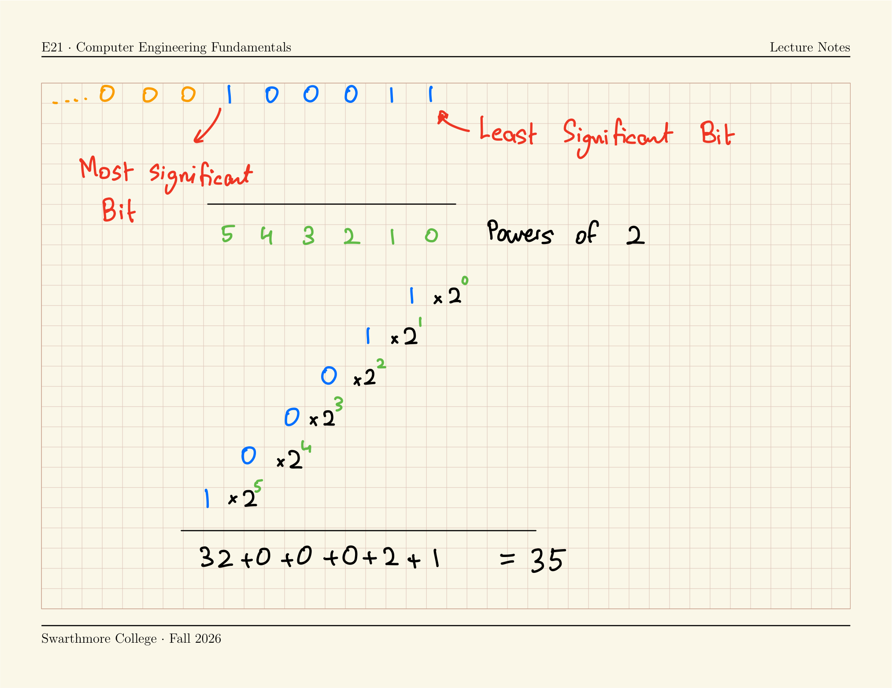
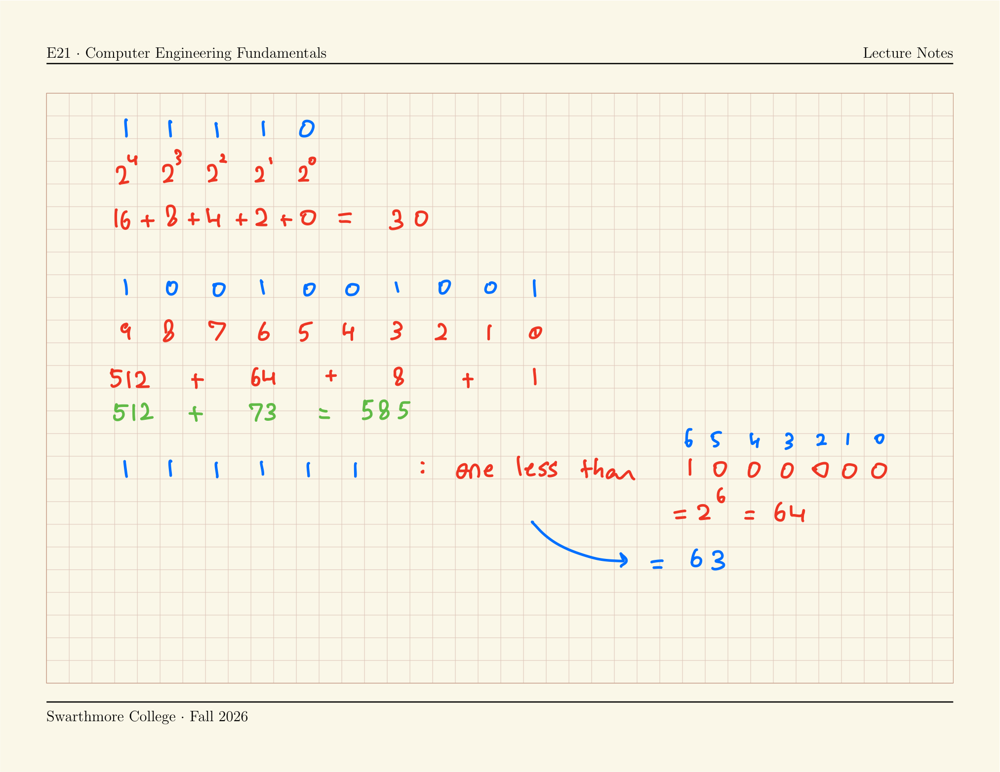
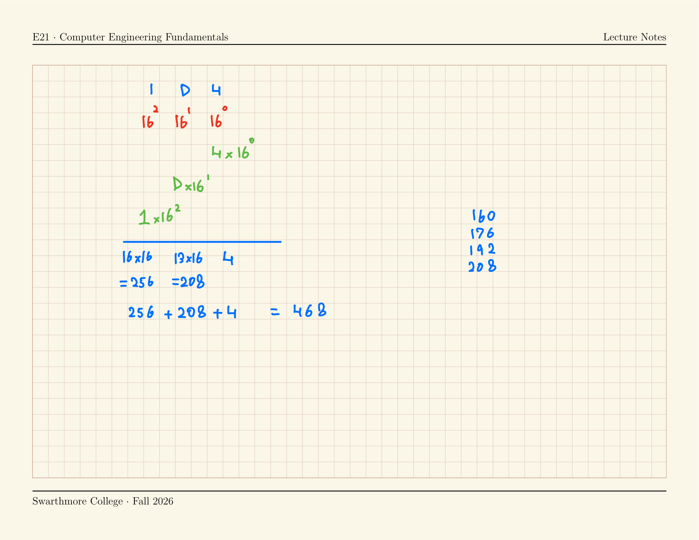
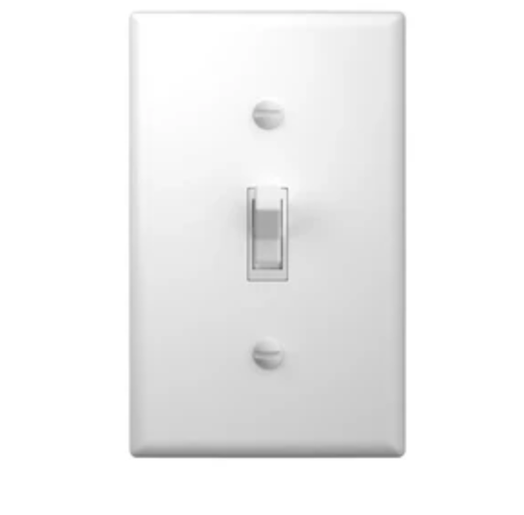
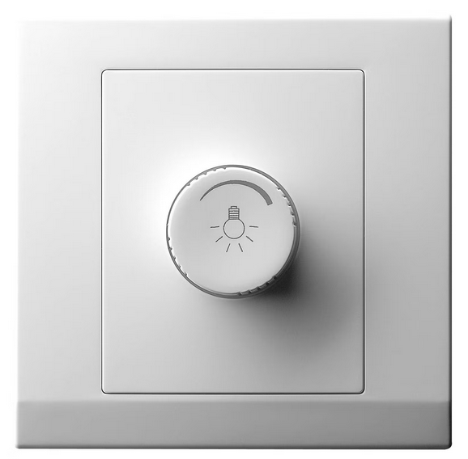
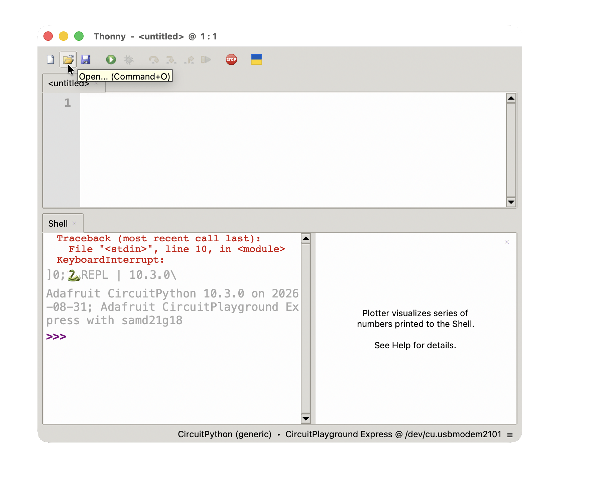
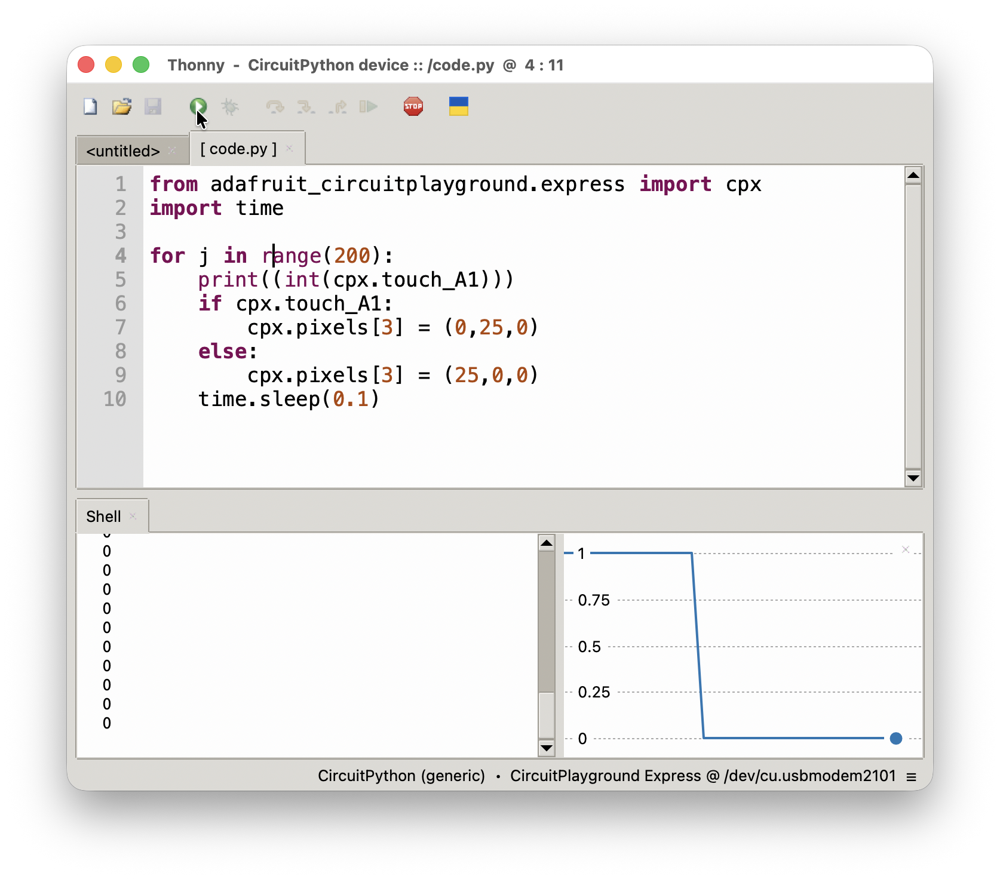

Lecture 03
E21 Computer Engineering Fundamentals
Lab Section Assignments
See Google Sheet sent out by Prof. Zucker!
Labs start Thursday
Announcements
- Homework due Thursday
- Wizard Session tonight 7 to 9 PM Singer 222
- Wizard Office Hours Announced (all in Singer 228)
- Samchan Lee 4:30 — 5:30 PM, Wednesdays
- Visnuk Rith 1:00 — 2:00 PM, Thursdays
- Uneeb Hyder 3:15 — 4:15 PM, Thursdays
Numbers with Base N
For Decimal numbers, \(N = 10\)
- Decimal numbers run from zero to nine
- The largest single-digit number is nine (\(=10^1 - 1\))
- The largest two-digit number is ninety-nine (\(=10^2 - 1\))
- The symbol
10represents the number ten
For Base-N numbers
- Base N numbers run from zero to
N-1 - The largest single-digit number is (\(=N^1 - 1\))
- The largest two-digit number is (\(=N^2 - 1\))
- The symbol
10represents the numberN
Base Systems
| Property | Decimal | Binary | Hexadecimal |
|---|---|---|---|
| Digits | 0 to 9 | 0 to 1 | 0 to 15 |
| Base | Ten | Two | Sixteen |
| Smallest 3-digit number |
\(10^{3-1}\) \(= 100\) |
\(2^{3-1}\) \(=4\) |
\(16^{3-1}\) \(=256\) |
How (decimal) numbers work
The place-value system
Number: One hundred and thirty seven
| Power of 10 | 2 | 1 | 0 |
|---|---|---|---|
| Digit | 1 | 3 | 7 |
| Units | \(7 \times 10^{0}\) | ||
| Tens | \(3 \times 10^{1}\) | ||
| Hundreds | \(1 \times 10^{2}\) | ||
| Total | \(100+\) | \(30+\) | \(7\) |
\[\boxed{=137}\]
Features of the place-value system
Number: One hundred and thirty seven
\[\boxed{=137}\]
- The digit on the right is the “least significant digit”
- The left-most digit is the “most significant digit”
- Zeros can be added to the left without changing the value.
- Zeros cannot be added to the right.
These features apply to all place-value systems, not just base-ten.
Binary Number System

The only symbols are 0 and 1
0000100010000110010000101001100011101000
…
- 35:
0000100011 - \(2^0 + 2^1 + 2^5 = 35\)
| Power of 2 | 5 | 4 | 3 | 2 | 1 | 0 |
|---|---|---|---|---|---|---|
| Digit | 1 | 0 | 0 | 0 | 1 | 1 |
| Value | \(2^5\) | 0 | 0 | 0 | \(2^1\) | \(2^0\) |
Practice with the Binary Number System
Find the value of the following binary numbers:
111101001001001111111

Converting from Decimal to Binary
How would you convert the number thirteen to binary?
One approach:
- Look for closest power of 2.
- 13 lies between \(2^3\) and \(2^4\)
- The number will have 4 digits
- Successively divide by 2 using integer division
- \(13 \div 2 = 6 \text{ remainder } 1\)
- \(6 \div 2 = 3 \text{ rem. } 0\)
- \(3 \div 2 = 1 \text{ rem. } 1\)
- \(1 \div 2 = 0 \text{ rem. } 1\)
- Binary representation of thirteen is
1101
- Convert the number 54 to binary.
Hexadecimal Number system
- Because the base is sixteen, the symbol
10represents the number sixteen, not the number ten. - More symbols are needed for ten, eleven, twelve, thirteen, fourteen and fifteen.
- Eight:
8 - Nine:
9 - Ten:
A - Eleven:
B - Twelve:
C - Thirteen:
D - Fourteen:
E - Fifteen:
F - Sixteen:
10 - Seventeen:
11
- Twenty-four:
18 - Twenty-five:
19 - Twenty-six:
1A - Twenty-seven:
1B - Twenty-eight:
1C - Twenty-nine:
1D - Thirty:
1E - Thirty-one:
1F - Thirty-two:
20 - Thirty-three:
21
Disambiguating number systems
- Usually, all numbers we write are decimal numbers.
- When using different base systems, ambiguities can arise.
- The number ‘101’ could mean:
- One hundred and one, if read as decimal
- Five, if read as binary
- Two hundred and fifty seven, if read as hexadecimal
The notation 0b and 0x is used for binary and hexadecimal numbers respectively.
101means one hundred and one0b101means five0x101means two hundred and fifty-seven
- An alternative approach is \(101_{10}\) for decimal, \(101_{2}\) for binary and \(101_{16}\) for hexadecimal.
Interpreting Hexadecimal numbers
Let’s interpret the hexadecimal number 3D, a.k.a. 0x3D.
| Power of 16 | 1 | 0 |
|---|---|---|
| Digit | 3 | \(D (= 13)\) |
| Value | \(3 \times 16^{1}\) | \(13 \times 16^{0}\) |
| Total | \(48\) | \(13\) |
so 0x3D is equal to the number sixty-one.
Now interpret the hexadecimal number 1D4

Converting from Decimal to Hexadecimal
How would you convert the number three hundred and seventeen to hexadecimal?
One approach:
- Look for closest power of 16.
- 317 lies between \(16^2\) and \(16^3\)
- The number will have 3 digits
- Successively divide by 16 using integer division
- \(317 \div 16 = 19 \text{ remainder } 13\), which has symbol
D - \(19 \div 16 = 1 \text{ rem. } 3\)
- \(1 \div 16 = 0 \text{ rem. } 1\)
- \(317 \div 16 = 19 \text{ remainder } 13\), which has symbol
- Hex representation of three hundred and seventeen is
13D
- Convert the number 417 to hex.
Analog vs. Digital Sensors
- A sensor with a digital input has two possible values: True or False
- A sensor with an analog input has many possible values.


Analog vs. Digital inputs on the CPX
Copy the following code into code.py on your Circuit Playground Express and run
Digital Read
from adafruit_circuitplayground.express import cpx
import time
while True:
print((int(cpx.touch_A1)))
if cpx.touch_A1:
cpx.pixels[3] = (0,25,0) # Green Light
else:
cpx.pixels[3] = (25,0,0) # Red Light
time.sleep(0.1)Analog Read
from adafruit_circuitplayground.express import cpx
import time
import analogio
import board
pin_a1 = analogio.AnalogIn(board.A1)
while True:
print(pin_a1.value)
time.sleep(0.01)
On the toolbar, go to View > Plotter.
